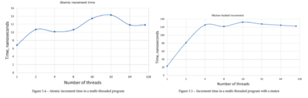

std::mutex, on POSIX system, it is typically POSIX mutex.std::lock_guard, RAII template for locking/unlocking mutexstd::lock() for locking multiple mutexes safelystd::condition_variable (following POSIX)std::atomic
std::async - where a function can be invoked asynchronously (possibly on another thread).
std::scoped_lock: RAII wrapper for locking multiple mutexes safely without deadlock.Three levels of reordering
This document summarises some known mappings of C/C++11 atomic operations to x86: http://www.cl.cam.ac.uk/~pes20/cpp/cpp0xmappings.html
| C/C++11 | Operation x86 implementation |
|---|---|
| Load Relaxed: | MOV (from memory) |
| Load Consume: | MOV (from memory) |
| Load Acquire: example: std::atomic<int> x(0); int y = x.load(std::memory_order_acquire); |
MOV (from memory) |
| Load Seq_Cst: example: std::atomic<int> x(0); int y = x.load() |
MOV (from memory) |
| Store Relaxed | MOV (into memory) |
| Store Release example: std::atomic<int> x(0); x.store(2, std::memory_order_release); |
MOV (into memory) |
| Store Seq Cst example: std::atomic<int> x(0); x.store(2); or just x = 2; |
(LOCK) XCHG // alternative: MOV (into memory),MFENCE The parenthesised (LOCK) reflects the fact that the XCHG instruction on x86 has an implicit LOCK prefix. If a compiler emits code using non-temporal stores, it must also emit sufficient fencing to make the usage of non-temporal stores unobservable to callers and callees. |
| Consume Fence: | <ignore> |
| Acquire Fence: | <ignore> |
| Release Fence: | <ignore> |
| Acq_Rel Fence: | <ignore> |
| Seq_Cst Fence: | MFENCE |
Summary: Code Gen on X86:
| operation | ordinary | atomic |
|---|---|---|
| load: | mov | mov |
| store: | mov | xchg |
| CaS: | cmpxchg | cmpxchg |
From Intel Manual (Intel 64 and IA-32 Architectures Software Developer’s Manual, Volume 3A):
POWER (IBM) and ARM v7 architecture have very expensive atomic load operation
A strong hardware memory model is one in which every machine instruction comes implicitly with acquire and release semantics.
lfence and sfence for free. But lfense + sfence != mfence or full memory barrier. Specifically, for #StoreLoad, you can reorder an acquire-load ahead of a release-store. In fact, it does happen on x86.std::memory_order_acq_rel and std::memory_order_seq_cst are the same thing on x86https://preshing.com/20120625/memory-ordering-at-compile-time/
Direct way: The minimalist approach to preventing compiler reordering is by using a special directive known as a compiler barrier
void foo()
{
A = B + 1;
asm volatile("" ::: "memory");
B = 0;
}
Indirect way:
Out-of-thin-air store:
In particular, compilers were free to introduce stores to shared memory in cases where there previously was none.
int A, B;
void foo()
{
if (A)
B++;
}
// Can be optimized to
void foo()
{
register int r = B; // Promote B to a register before checking A.
if (A)
r++;
B = r; // Surprise! A new memory store where there previously was none.
}
In any case, the new C++11 standard explicitly prohibits such behavior from the compiler in cases where it would introduce a data race. The wording can be found in and around §1.10.22 of the most recent C++11 working draft:
Memory barriers control how changes to memory made by one CPU become visible to other CPUs. This is a global control across all CPUs. In low level, memory barriers are implemented by the hardware, it can be invoked by processor-specific instructions. C++11 provides standard memory barriers via std::memory_order_*, which are the modifiers of atomic operations.
You can enforce correct memory ordering on the processor by issuing any instruction which acts as a memory barrier. In some ways, this is the only technique you need to know, because when you use such instructions, compiler ordering is taken care of automatically. Examples of instructions which act as memory barriers include (but are not limited to) the following:
asm volatile("lwsync" ::: "memory")load(std::memory_order_acquire)pthread_mutex_lockEach type of memory barrier is named after the type of memory reordering it’s designed to prevent: for example, #StoreLoad is designed to prevent the reordering of a store followed by a load.
#LoadLoad is useful when you want to prevent reordering between reads. This is especially useful when a thread is consuming some data depending on a flag e.g. isPublished written by another thread, so reading the data always happens after checking the flag.
Similarly #StoreStore fence is used to prevent reordering writes (sfense on x86). This is useful when a thread is publishing some data using a flag, so writing the data always happens before setting the flag.
#LoadStore fence disallows reordering a subsequent store ahead of the load instruction, which typically happens on CPU when the later store is a cache hit and the earlier load is a cache miss.
#StoreLoad is unique and it acts as a full sync (full memory barrier, mfence on x86) – all writes before the fence will be made visible to all other caches and all reads after the fence will get values at-or-later than the execution time of the fence. If all operations have #StoreLoad fences, it would be sequential consistent.
A StoreLoad barrier ensures that all stores performed before the barrier are visible to other processors, and that all loads performed after the barrier receive the latest value that is visible at the time of the barrier. In other words, it effectively prevents reordering of all stores before the barrier against all loads after the barrier, respecting the way a sequentially consistent multiprocessor would perform those operations.
#StoreLoad is unique. On most processors, instructions that act as a #StoreLoad barrier tend to be more expensive than instructions acting as the other barrier types.
On x86/64 processors, there is no specific instruction which acts only as a StoreLoad barrier, but there are several instructions which do that and more. The mfence instruction is a full memory barrier, which prevents memory reordering of any kind. In GCC, it can be implemented as follows:
for (;;) // Loop indefinitely
{
sem_wait(&beginSema1); // Wait for signal from main thread
while (random.integer() % 8 != 0) {} // Add a short, random delay
// ----- THE TRANSACTION! -----
X = 1;
asm volatile("mfence" ::: "memory"); // Prevent memory reordering
r1 = Y;
sem_post(&endSema); // Notify transaction complete
}
Again, you can verify its presence by looking at the assembly code listing.
...
mov DWORD PTR _X, 1
mfence
mov eax, DWORD PTR _Y
mov DWORD PTR _r1, eax
...
Good article: https://blog.the-pans.com/std-atomic-from-bottom-up/
When P is trying to write to its cache and its cache state is "invalid", it needs to first fetch the cacheline from main memory (or transfer from other caches) before it can set exclusive ownership of the cacheline and set its state to "modified". This can be very slow, hence the introduction of Store Buffer.
In this case, writes get buffered in the cache-local store buffer after issuing read-invalidates to all caches. The cacheline will be eventually updated with the written value after it's fetched from main memory. During this window, read from the cache will have to search for its store buffer for buffered writes. It works for the local cache but not others.
mfence (https://www.felixcloutier.com/x86/mfence)Performs a serializing operation on all load-from-memory and store-to-memory instructions that were issued prior the MFENCE instruction. This serializing operation guarantees that every load and store instruction that precedes the MFENCE instruction in program order becomes globally visible before any load or store instruction that follows the MFENCE instruction. The MFENCE instruction is ordered with respect to all load and store instructions, other MFENCE instructions, any LFENCE and SFENCE instructions...
In practice, it drains the store buffer before any loads (globally) can proceed.
sfence (https://www.felixcloutier.com/x86/sfence)Orders processor execution relative to all memory stores prior to the SFENCE instruction. The processor ensures that every store prior to SFENCE is globally visible before any store after SFENCE becomes globally visible. The SFENCE instruction is ordered with respect to memory stores, other SFENCE instructions, MFENCE instructions, and any serializing instructions (such as the CPUID instruction). It is not ordered with respect to memory loads or the LFENCE instruction.
It doesn't have to drain the store buffer. It's often used for Non-temporal instructions, when by default, operations bypass cache and "breaks" cache coherence explicitly. Inserting sfence after an NT store, makes sure the data becomes visible to other cores.
lfence (https://www.felixcloutier.com/x86/lfence)Performs a serializing operation on all load-from-memory instructions that were issued prior the LFENCE instruction. Specifically, LFENCE does not execute until all prior instructions have completed locally, and no later instruction begins execution until LFENCE completes. In particular, an instruction that loads from memory and that precedes an LFENCE receives data from memory prior to completion of the LFENCE.
Curate list ofThreads and memory model for C++ https://hboehm.info/c++mm/
load acquire <-> store release
Acquire-read disallows reordering reads or writes ahead of it, in program order. Release-write disallows reordering reads or writes after it, in program order. It says nothing about fences, which is just implementation detail. In practice it looks like (https://preshing.com/20120913/acquire-and-release-semantics/):
On x86 this is the default behavior without extra memory barriers needed. With weak memory model, reorder can happen.
When an atomic operation is executed with this order, we have a guarantee that
Caveats:
On the producer side, we need one-half of the guarantee given by the acquire-release memory barrier: release memory order:
On the consumer side: the acquire memory order:

The left side of the plot. Here, the speed is limited by the L1 cache (up to 32 KB) then by the L2 cache (256 KB). This processor has separate L1 and L2 caches for each core, so, as long as the data fits into the L2 cache, there should not be any interaction between the threads
The right side of the plot - the L3 cache is shared between all the CPU cores. The main memory is shared too.

Even on one thread
False-share benchmark
no-sharing benchmark allocates the atomic variables on the stack of each thread. these threads run completely independently of each other.
This analysis shows that the real reason for the high cost of accessing the shared data is the work that must be done to maintain exclusive access to a cache line and to make sure all CPUs have consistent data in their caches.